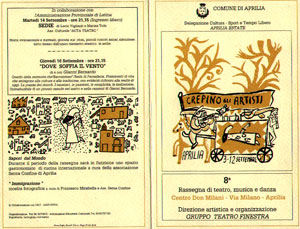

|  |
8° RASSEGNA NAZIONALE TEATRO
APRILIA 3-12 SETTEMBRE 1993
SPAZIOTEATRO ALL’APERTO
CENTRO DON MILANI VIA MILANO
PROGRAMMA
SABATO 4 SETTEMBRE ore 21,15
“DEVO FARE UN MUSICAL” di Enrico Vaime e Massimo Bagliani
con Massimo Bagliani. Regia di Mania Sbragia. Allestimento: Teatro Moderno
DOMENICA 5 SETTEMBRE ore 21,15
“MERCOLEDÌDICIOTTOETRENTA” Conduttore Carlo Fazi
Con: i partecipanti al laboratorio di movimento, danza creativa nella visione dell’unità
psicopatica. Allestimento C.I.D.I. Centro iniziativa demografica degli insegnanti – Sezioni attività corporee.
MERCOLEDÌ 8 SETTEMBRE ore 21,15
AMORE di Daniela Finocchi e Laura Malaterra con Lina Mura e Laura Malaterra, al pianoforte
Giancarlo Capezzoli. Regia di Laura Malaterra. Allestimento: Compagnia del Bagatto.
GIOVEDÌ 9 SETTEMBRE ore 16,30
Ass.Oper. Ass.ne degli operatori socio culturali della provincia di Latina
CONVEGNO: Problemi e prospettive delle aggregazioni operanti nel setto¬re dello spettacolo in provincia di Latina. ( Teatro, Musica e Danza) Intervanno Dott. Ernanno Iencinella (Delegato alla Cultura del Comune di Aprilia), i rappre¬sentanti delle Associazioni culturali della provincia di Latina.
GIOVEDÌ 9 SETTEMBRE ore 21,15
DUO AKADEMIA
CONCERTO di Chitarra Classica
Con Cinzia Ponsillo e Gianluca Marasacchio
VENERDÌ 10 SETTEMBRE ore 21,15
"EH..,?” O LE AVVENTURE DI MR. BALLON con Yves Lebreton
Commedia in un atto scritta, diretta e interpretata da Yves Lebreton
SABATO 11 SETTEMBRE ore 21,15
"CIAO MAGGIE" Regia di Manlio Rondoni
Spettacolo di musiche e poesie
DOMENICA 12 SETTEMBRE ore 21,15
"DIRETTORI D' ORCHESTRA" con Nathalie Mentha
Marcus Acauan. Regia Pino Di Buduo.
Allestimento: Teatro Potlach
| Teatro Potlach |
In collaborazione con l’Amministrazione Provinciale di Latina
MARTEDÌ 14 SETTEMBRE ore 21,15
“SEDIE” di Lucia Vigilanti e Manina Tufo
Ass. Culturale “ACTA TEATRO”
GIOVEDÌ 16 SETTEMBRE ore 21,15
“DOVE SOFFIA IL VENTO” di e con Gianni Bernardo
Durante il periodo della rassegna sarà in funzione uno spazio gastronomico di cucina internazionale a cura dell’associazione Senza Confine di Aprilia
“Immigrazione” mostra fotografica a cura di Francesco Mirabella e Ass. Senza Confine